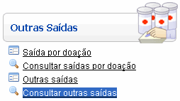
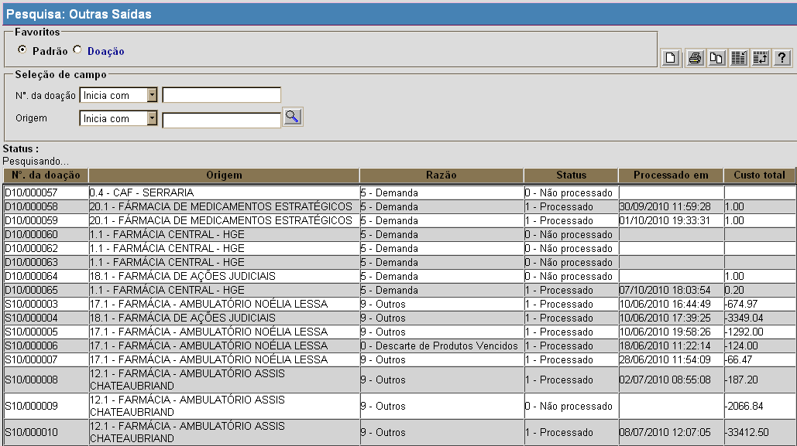

Consultar Outras Saídas [ Voltar ]Utilize este formulário para localizar e abrir outros tipos de saída.O formulário "Consultar Outras Saídas" encontra-se dentro do menu "Outras Saídas". 
Após clicar no nome do formulário, o sistema abrirá a seguinte tela: 
1º Passo: utilize os filtros da pesquisa para localizar a saída desejada. Para maiores informações sobre como utilizar a ferramenta de busca, favor ver o manual "Introdução ao Sistema". Após localizar o registro desejado, selecione-o com um clique para abri-lo na tela "Outras Saídas". |